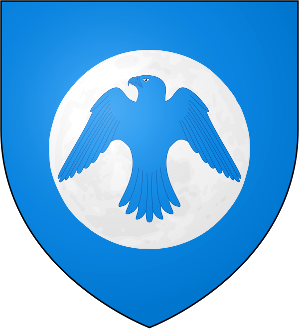
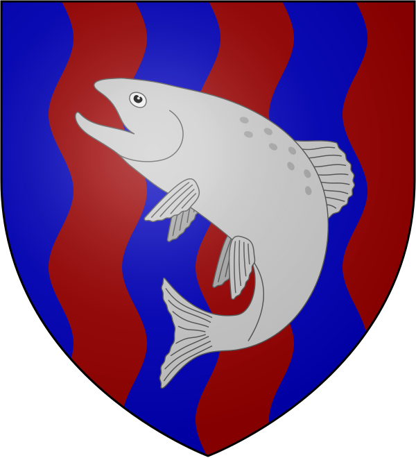
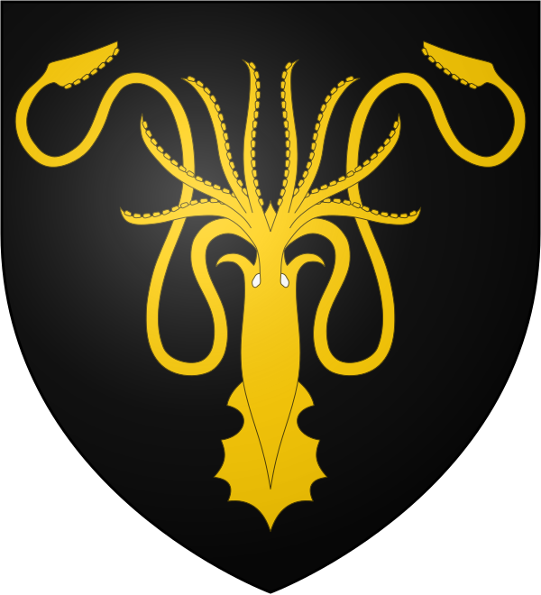
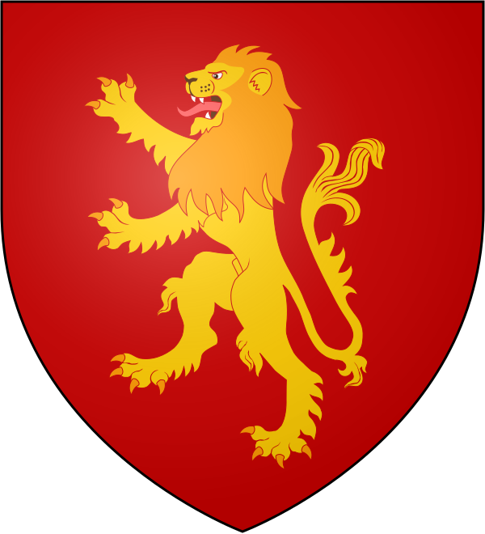
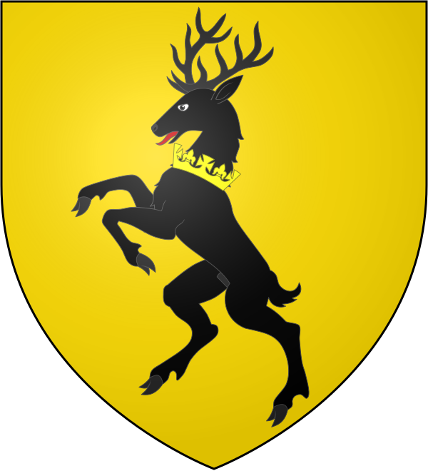

The Books
- A Game of Thrones (1996).
- A Clash of Kings (1998).
- A Storm of Swords (2000).
- A Freast for Crows (2005).
- A Dance with Dragons (2011).
- The Winds of Winter (TBA).
- A Dream of Spring (TBA).

A Song of Ice and Fire (commonly abbreviated as ASoIaF) is an ongoing series of epic fantasy novels by American novelist and screenwriter George R. R. Martin. Martin began writing the series in 1991 and the first volume was published in 1996. Originally planned as a trilogy, the series now consists of five published volumes; a further two are planned. In addition there are three prequel novellas currently available, with several more being planned, and a series of novella-length excerpts from the main Ice and Fire novels.
The story of A Song of Ice and Fire takes place in a fictional world, primarily on a continent called Westeros but also on a large landmass to the east, known as Essos. Most of the characters are human but as the series progresses others are introduced, such as the cold and menacing supernatural Others from the far North and fire-breathing dragons from the East, both thought to be extinct by the humans of the story. There are three principal story lines in the series: the chronicling of a dynastic civil war for control of Westeros among several competing families; the rising threat of the Others, who dwell beyond an immense wall of ice that forms Westeros' northern border; and the ambition of Daenerys Targaryen, the exiled daughter of a king who was murdered in another civil war fifteen years before, to return to Westeros and claim her rightful throne. As the series progresses, the three story lines become increasingly interwoven and dependent upon each other.
The series is told in the third-person through the eyes of a number of point of view characters. By the end of the fourth volume, there have been seventeen such characters with multiple chapters and eight who only have one chapter apiece. Several new viewpoint characters are introduced by the conclusion of the fifth volume, setting the stage for the major events of the sixth novel.
These are the main Houses in Westeros:
| House | Region | Seat | Sigil | Motto |
|---|---|---|---|---|
| Stark | North | Winterfell |  |
Winter is Coming |
| Arryn | Vale of Arryn | The Eyrie |  | As High as Honor |
| Tully | Riverlands | Riverrun |  | Family, Duty, Honor |
| Greyjoy | Iron Islands | Pyke |  | We Do Not Sow |
| Lannister | Westerlands | Casterly Rock |  | Hear Me Roar! |
| Baratheon | Stormlands | Storm's End |  | Ours Is the Fury |
| Tyrell | Reach | Highgarden |  |
Growing Strong |
| Martell | Dorne | Sunspear |  |
Unbowed, Unbent, Unbroken |
| Targaryen | Crownlands (formerly) | Dragonstone (formerly) Red Keep (formerly) |
Fire and Blood |
If you want to know more about each house, click on the following image (in the section of each house):
Westeros is one of the three known continents in the known world, the others being Essos and Sothoryos. Most of the area of Westeros is covered by a political entity known as the Seven Kingdoms, while the far north beyond the Wall includes the free folk. The closest foreign nations to Westeros are the Free Cities, a collection of independent city-states across the narrow sea in western Essos. To the south of Westeros lie the Summer Isles.
George Raymond Richard Martin (born September 20, 1948), sometimes referred to as GRRM, is an American author and screenwriter of fantasy, horror, and science fiction. He is best known for his A Song of Ice and Fire series of bestselling epic fantasy novels, which has been adapted into Game of Thrones, a dramatic series on HBO. He was selected by Time as one of the "2011 Time 100," a list of the "most influential people in the world." In 2012 he won the World Fantasy Award for Life Achievement.

A Wiki of Ice and Fire is a fan-based wiki, dedicated to George R. R. Martin's created universe, covering the Novels, HBO's Game of Thrones TV series and other sources. Their goal is to build that wiki into as complete and comprehensive a guide of that universe as possible.
A Wiki of Ice and Fire is (in my opinion) the best fan-based website about George R.R. Martin's A Song of Ice and Fire Universe. Visit the website if you want to learn more about it!
This is George R.R. Martin's official website. Check it out!
DEVF is the school in which (as of August, 2024) i'm studying Web Development. Check it out!
W3Schools is a website where you can learn to code (HTML, CSS, JS, SQL, etc.). Check it out!
Hi! My name is David. I'm from Mexico. I studied law at the Universidad Nacional Autónoma de México (Facultad de Estudios Superiores Acatlán) from 2005 to 2010. I've worked as a lawyer since 2010 and until April 30, 2024. On 2023, I decided to make a radical turn in my life and to start a new path in programming. I've always liked computing, so now I'm studying Web Development.
This is the website i created for my final project in Web Development (Module 1/8). It's a simple website in HTML and a bit of CSS.